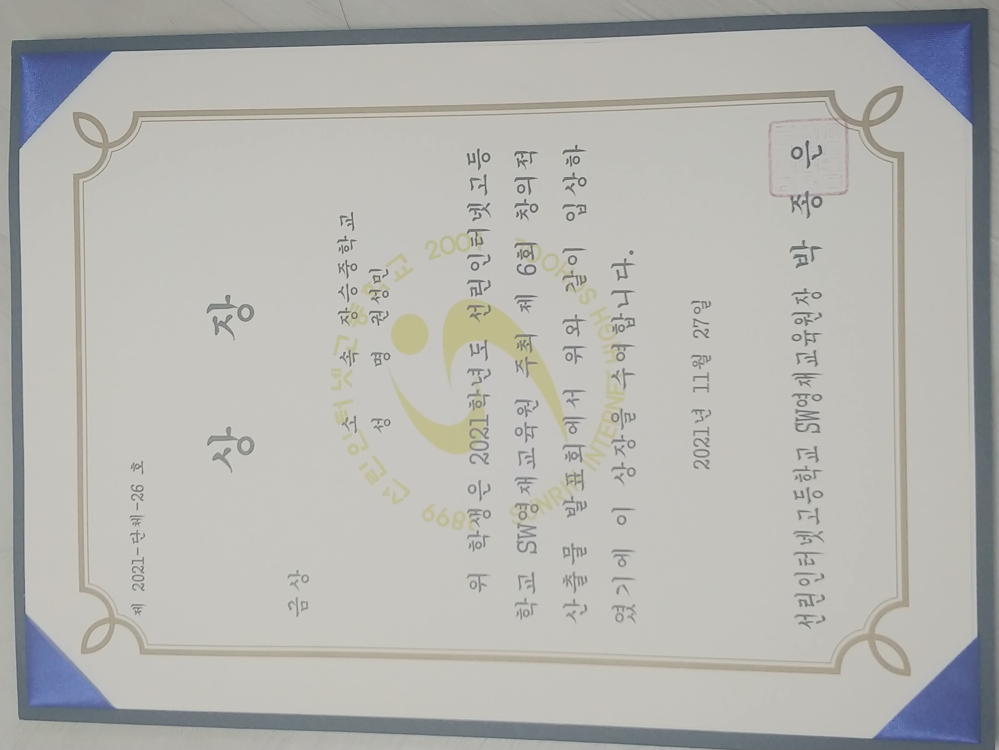
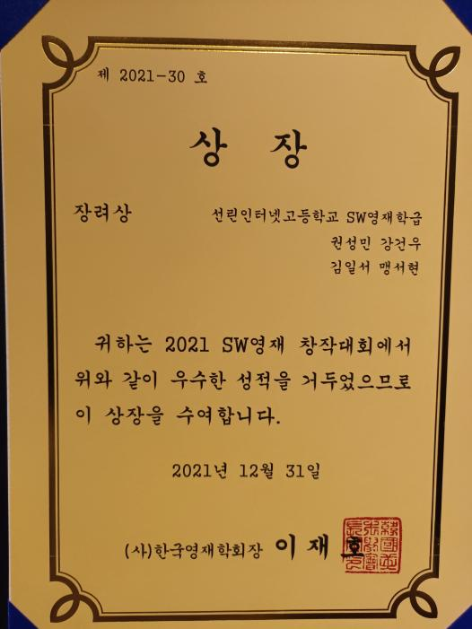
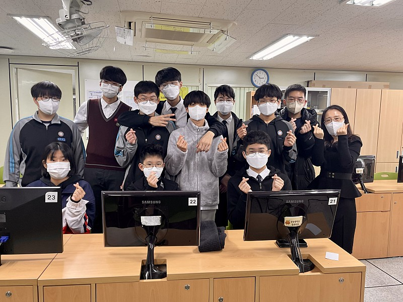

수상실적

중3 때 영재원 내에서 산출물 대회를 한다고 공지를
받았습니다. 영재원 초기 때는 상상으로만 1등 하는
것을 생각을 하였고 대회에 별 흥미가 없었습니다.
대회의 팀을 구성할 때는 아무 생각 없이 근처에
앉은 애들끼리 팀을 이루었습니다. 주제를 정할때는
현실성이 가능하면서 저희가 구현 가능한 것을
위주로 브레인스토밍을 진행하였습니다.그래서
저희가 넷의 공통점인 게임을 관련되서 하자고
정하였습니다.게임 관련된것 들은 많이 나왔으므로
신박한게 없을까라는 생각을 하면서 곰곰이
고민하다가 결국에는 국내에는 게임 비판을 하여서
공유하는 사이트가 없으므로 한번 만들어 보자고
하였습니다. 처음이라서 다들 미숙하지만 최선을
다하자고 마음을 먹고 매일 새벽까지 웹 디자인하고
ppt를 하면서 3주 동안 시간을 보내었습니다.
최종적으로는 다른 팀들과는 다르게 노력과 심혈을
기울인 결과 영재원 내 애서 1등이라는
쾌거를 이 룰 수 있었습니다.

이 대회는 영재원 내에서 하는 대회가 아니라
전국에 있는 IT 영재원 끼리 산출물 대회를 하는
것이었습니다. 그래서 전국이라는 큰 타이틀을
가지고 있어서 아마 입상은커녕 그냥 떨어지지
않을까라는 생각을 하고 있었습니다. 그래도 선린
영재원 내 대회에서 피드백을 바탕으로 수정 할
것은 수정하고 PPT도 부족한 점을 고치고 더욱더
뚜렷하게 바꾸었습니다.제가 영재원 내 대회에서도
발표를 하고 전국 대회에서도 발표를 하였는데
영재원 내에서는 시간이 넘어가도 조금 발표를
하게 끔 하였습니다.하지만 전국 대회에서는 5분이
되면은 바로 끊어 버려서 너무 당황하였고 그래도
발표는 프로젝트 시연 영상을 제외하고 나머지는
발표를 하여서 다행이라고 생각을 하였습니다.
그래서 시간 내에 발표를 하지 못하는 것이랑
게임관련된 주제로 하여 일부 사람들만 공감을
하는 주제를 선택하여서 아마 장려상을 받지
않았나 생각을 해봅니다.
동아리 활동

중학교 3년 내내 학교에 있는 프로그래밍 관련 동아리에 들어갔습니다. 들어가서 아두이노, 마이크로비트, 파이썬을 하였습니다. 2학년때 부터는 학우들과 선배들한테 파이썬 기본 문법을 수업을
하였습니다. 그리고 동시에 부회장을 맡으면서 동아리의 전반적인 운영과 지도를 제가 해보았습니다.3학년 때는 제가 부장이 되어서 동아리의 모든 것이 제 주도하에 운영되었고 선생님도
잘한다면서 칭찬하는 것이 너무 좋았고 행복하였습니다. 그 뒤로는 누구를 가르치고 무언가를 이끄는 것이 즐거워졌습니다. 누구에게는 귀찮고 하기 싫을 수도 있지만 저는 뜻깊고 재미있는
경험이라 생각합니다. 제가 아는 지식을 남들과 공유하고 즐기는것이 그 순간만큼은 즐거웠습니다.